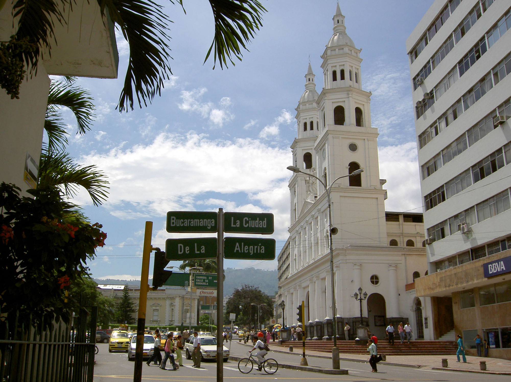
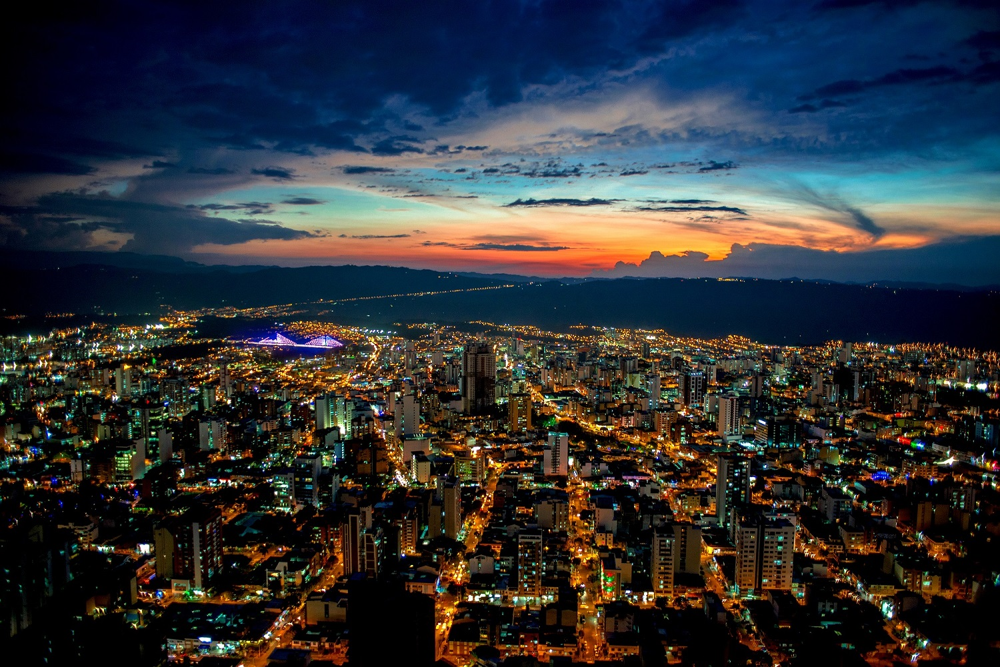
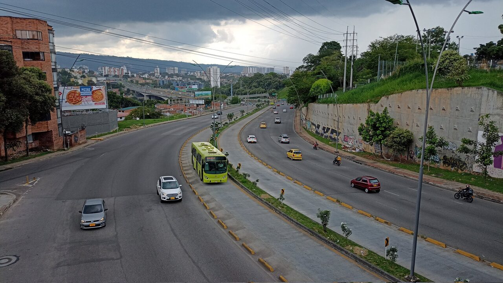

Bucaramanga

Bucaramanga se consolida como una de las ciudades más importantes del nororiente colombiano, destacándose por su desarrollo en comercio, servicios y calidad de vida. En los últimos años, la ciudad ha experimentado un crecimiento significativo gracias a la inversión en proyectos urbanos, la modernización de sus espacios públicos y el fortalecimiento de su actividad empresarial. Esto ha permitido mejorar la calidad de vida de sus habitantes y atraer inversión regional y nacional. El turismo en Bucaramanga ha crecido en los últimos años, especialmente por su cercanía a destinos naturales como el Cañón del Chicamocha, que atrae visitantes por su paisaje y actividades recreativas. Aunque no es una ciudad turística principal, este sector contribuye al comercio y los servicios. Sin embargo, la ciudad también enfrenta desafíos importantes en materia de infraestructura y movilidad. Algunos proyectos han presentado retrasos y existe debate sobre la inversión pública y el uso de recursos para mejorar las vías y el transporte. Además, en ciertas zonas se han presentado problemas de seguridad, lo que ha generado preocupación y ha llevado a las autoridades a reforzar estrategias de control. A pesar de estos retos, Bucaramanga continúa avanzando y posicionándose como un centro clave de desarrollo en el nororiente colombiano, gracias a su economía dinámica y su ubicación estratégica. Bucaramanga es una ciudad estratégica del nororiente colombiano, destacada por su actividad comercial y su crecimiento urbano.
Economía
Su economía se basa en:

- Comercio
- Servicios (salud y educación)
- Industria (calzado, confección, metalmecánica)
- Turismo regional
infraestructura
La infraestructura de la ciudad se basa en:

- Proyectos de mejoramiento y ampliación de vías
- Desarrollo de espacios públicos y parques
- Sistemas de transporte urbano (como Metrolínea)
- Obras de urbanismo y modernización de la ciudad